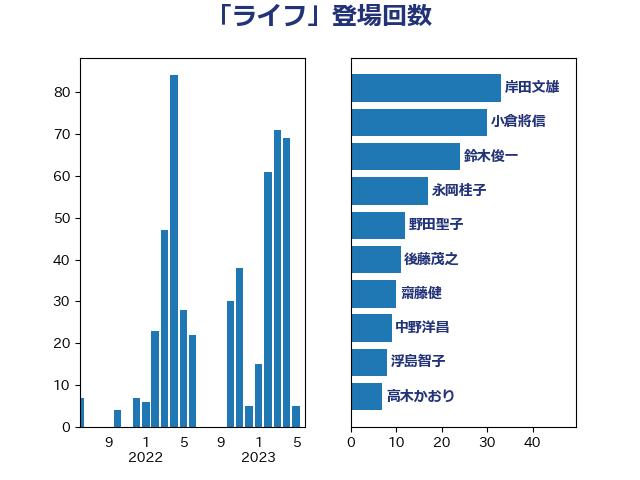

単語「ライフ」

| 岸田文雄 | 自由民主党 | 33 回 |
| 小倉將信 | 自由民主党 | 30 回 |
| 鈴木俊一 | 自由民主党 | 24 回 |
| 永岡桂子 | 自由民主党 | 17 回 |
| 野田聖子 | 自由民主党 | 12 回 |
| 後藤茂之 | 自由民主党 | 11 回 |
| 齋藤健 | 自由民主党 | 10 回 |
| 中野洋昌 | 公明党 | 9 回 |
| 浮島智子 | 公明党 | 8 回 |
| 高木かおり | 日本維新の会 | 7 回 |
| 末松信介 | 自由民主党 | 7 回 |
| 和田義明 | 自由民主党 | 7 回 |
| 加藤勝信 | 自由民主党 | 7 回 |
| 加田裕之 | 自由民主党 | 7 回 |
| 一谷勇一郎 | 日本維新の会 | 7 回 |
| 古川禎久 | 自由民主党 | 6 回 |
| 山際大志郎 | 自由民主党 | 5 回 |
| 鰐淵洋子 | 公明党 | 4 回 |
| 高木陽介 | 公明党 | 4 回 |
| 阿部司 | 日本維新の会 | 4 回 |
| 金村龍那 | 日本維新の会 | 4 回 |
| 葉梨康弘 | 自由民主党 | 4 回 |
| 牧島かれん | 自由民主党 | 4 回 |
| 梅村みずほ | 日本維新の会 | 4 回 |
| 松本剛明 | 自由民主党 | 4 回 |
| 長友慎治 | 国民民主党 | 3 回 |
| 西銘恒三郎 | 自由民主党 | 3 回 |
| 福島伸享 | 無所属 | 3 回 |
| 山口那津男 | 公明党 | 3 回 |
| 小林鷹之 | 自由民主党 | 3 回 |
| 住吉寛紀 | 日本維新の会 | 3 回 |
| 仁木博文 | 無所属 | 3 回 |
| 三浦信祐 | 公明党 | 3 回 |
| 高階恵美子 | 自由民主党 | 2 回 |
| 鈴木貴子 | 自由民主党 | 2 回 |
| 金子恭之 | 自由民主党 | 2 回 |
| 酒井庸行 | 自由民主党 | 2 回 |
| 赤木正幸 | 日本維新の会 | 2 回 |
| 西野太亮 | 自由民主党 | 2 回 |
| 竹内真二 | 公明党 | 2 回 |
| 石井啓一 | 公明党 | 2 回 |
| 田島麻衣子 | 立憲民主党 | 2 回 |
| 田中健 | 国民民主党 | 2 回 |
| 熊谷裕人 | 立憲民主党 | 2 回 |
| 清水真人 | 自由民主党 | 2 回 |
| 深澤陽一 | 自由民主党 | 2 回 |
| 浅野哲 | 国民民主党 | 2 回 |
| 林芳正 | 自由民主党 | 2 回 |
| 松野博一 | 自由民主党 | 2 回 |
| 東徹 | 日本維新の会 | 2 回 |
| 斉藤鉄夫 | 公明党 | 2 回 |
| 山添拓 | 日本共産党 | 2 回 |
| 山本啓介 | 自由民主党 | 2 回 |
| 小沼巧 | 立憲民主党 | 2 回 |
| 安江伸夫 | 公明党 | 2 回 |
| 嘉田由紀子 | 無所属 | 2 回 |
| 吉川赳 | 無所属 | 2 回 |
| 勝目康 | 自由民主党 | 2 回 |
| 中山展宏 | 自由民主党 | 2 回 |
| 上月良祐 | 自由民主党 | 2 回 |
| 音喜多駿 | 日本維新の会 | 1 回 |
| 青木愛 | 立憲民主党 | 1 回 |
| 鈴木隼人 | 自由民主党 | 1 回 |
| 野間健 | 立憲民主党 | 1 回 |
| 越智隆雄 | 自由民主党 | 1 回 |
| 赤池誠章 | 自由民主党 | 1 回 |
| 谷合正明 | 公明党 | 1 回 |
| 西田実仁 | 公明党 | 1 回 |
| 西村康稔 | 自由民主党 | 1 回 |
| 藤巻健太 | 日本維新の会 | 1 回 |
| 藤岡隆雄 | 立憲民主党 | 1 回 |
| 藤丸敏 | 自由民主党 | 1 回 |
| 芳賀道也 | 国民民主党 | 1 回 |
| 羽生田俊 | 自由民主党 | 1 回 |
| 緒方林太郎 | 無所属 | 1 回 |
| 竹谷とし子 | 公明党 | 1 回 |
| 竹詰仁 | 国民民主党 | 1 回 |
| 窪田哲也 | 公明党 | 1 回 |
| 稲津久 | 公明党 | 1 回 |
| 稲富修二 | 立憲民主党 | 1 回 |
| 福重隆浩 | 公明党 | 1 回 |
| 福山哲郎 | 立憲民主党 | 1 回 |
| 石原宏高 | 自由民主党 | 1 回 |
| 矢倉克夫 | 公明党 | 1 回 |
| 生稲晃子 | 自由民主党 | 1 回 |
| 牧山ひろえ | 立憲民主党 | 1 回 |
| 津島淳 | 自由民主党 | 1 回 |
| 横沢高徳 | 立憲民主党 | 1 回 |
| 榛葉賀津也 | 国民民主党 | 1 回 |
| 松木けんこう | 立憲民主党 | 1 回 |
| 村田享子 | 立憲民主党 | 1 回 |
| 杉久武 | 公明党 | 1 回 |
| 本村伸子 | 日本共産党 | 1 回 |
| 本庄知史 | 立憲民主党 | 1 回 |
| 木村次郎 | 自由民主党 | 1 回 |
| 新垣邦男 | 立憲民主党 | 1 回 |
| 平山佐知子 | 無所属 | 1 回 |
| 川合孝典 | 国民民主党 | 1 回 |
| 岸真紀子 | 立憲民主党 | 1 回 |
| 岬麻紀 | 日本維新の会 | 1 回 |
| 山口壯 | 自由民主党 | 1 回 |
| 山下雄平 | 自由民主党 | 1 回 |
| 小沢雅仁 | 立憲民主党 | 1 回 |
| 宮口治子 | 立憲民主党 | 1 回 |
| 守島正 | 日本維新の会 | 1 回 |
| 城井崇 | 立憲民主党 | 1 回 |
| 国光あやの | 自由民主党 | 1 回 |
| 吉良よし子 | 日本共産党 | 1 回 |
| 吉田久美子 | 公明党 | 1 回 |
| 吉田はるみ | 立憲民主党 | 1 回 |
| 佐藤英道 | 公明党 | 1 回 |
| 井坂信彦 | 立憲民主党 | 1 回 |
| 丸川珠代 | 自由民主党 | 1 回 |
| 下野六太 | 公明党 | 1 回 |